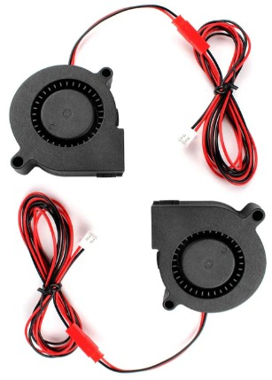

Como se compone mi kingroon kp3s
En impresion 3D no es unicamente darle a un boton y esperar a que termine nuestra pieza seleccionada, debemos de saber un poco de mecanica y por ello es importante identificar cada componente mecanico de nuestra impresora, desde lo mas chico hasta lo mas grande, esto nos permite entender y comprender como funcionan, a continuacion tendremos una lista de cada uno de los componentes alojados en nuestra impresora y el funcionamiento que tiene en cada proceso
- Impresora completa
- Fuente de poder
- Extrusor
- Extrusor interno
- Disipador directo
- Bloque calentador
- Nozzle
- Ventilador interno 
- Tornillo sin fin Eje Z
- Ruedas de desplazamiento para ejes
- Perfil de metal para eje Z
- Cople de aluminio
- Motor a pasos
- Switch de limite
- Cama caliente magnetica
- Kit nivelacion para cama caliente
- Esqueleto de metal
- Guia lineal de rail